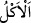

adamın elinde ve korumasında olmasından kinâyedir. Yâni elinizin altında bulunan
mallardan yemenizde size bir güçlük yoktur. Fakat bu yeme, malın bizzat kendisinden
değil de, bostanın meyvesi-sebzesi ve hayvanların sütü gibi malın aslına ziyade olan
şeylerden olmalıdır.
“Yahut dostlarınızın evlerinden yemenizde” sizin ve beraberinizde olanların
yemesinde “bir sakınca yoktur.” “ yenilecek şeyleri ağza alıp yemektir.
“ (dostluk)” sevgide ve bağlılıkta inancın doğru olması demektir. Bu sadece
insana mahsustur. Buna göre dost/arkadaş, sevgisinde sana karşı doğru olan demektir.
Ebû Osmân (r.h.) der ki: Dost, zâhiri senin zâhirine ters olmadığı gibi, bâtını da senin
bâtınına ters olmayandır. Böyle olunca din ve dünyaya âid her türlü konuda ona karşı
geniş davranıp açılmak câiz olur. ‘Dost, seni tasdik eden değil, sana doğru söyleyendir’
diye ne güzel söylenmiştir.
Yâni aranızda nesep bakımından bir akrabalık olmasa bile dostlarınızın evlerinden
yemenizde bir sakınca yoktur. Çünkü bu şekilde davranmaktan onlar, pek çok akrabadan
daha fazla sevinir ve hoşnud olurlar. İbn Abbas (r.a.)’ın dostun, anne-babadan daha
önde olduğunu söylediğine dâir bir rivâyet vardır.
Rivâyete göre cehennemlikler, yardım isteyecekleri zaman anne ve babalardan yardım
istemeyecekler, ancak “Şimdi artık bizim ne şefâatçilerimiz var. Ne de yakın bir
dostumuz.” (eş-Şuarâ, 26/100-101) diyeceklerdir.
Hasan Basrî bir gün evine girip, dostlarından bir gurubun yatağının altında bulunan
yiyeceği almış yemekte olduklarını görünce sevincinden yüzü ay gibi parladı ve Bedir
ashabından görüştüğü kimseleri kasdederek: “Biz onları böyle gördük” dedi.
Kâşifî der ki: “Feth Mevsılî (r.h.) bir dostunun evine geldi, o evde yoktu. Dostunun
para kesesini câriyeden istedi. İçinden bir dirhem aldı ve geri kalanını câriyeye geri
verdi. Efendi eve gelip olayı câriyeden işitince, sevinç ve hazzın şükranesi olarak
câriyeyi âzâd etti ve ona ikramda bulundu.
Nigâristân’da der ki:
Vîrânelikte huzûr içinde oturan
Bir dervişe bir gece gizlice
“Dünyadaki lezzetlerden hangisi hoştur?” diye sordum.
“Gerçek dostların arasında elde edilen huzûr” diye cevap verdi.
Avârifü’l-maârif’te der ki: “Bir kimse dostuna, sâhip olduğu maldan kendisine
vermesini istese, o da malının az olduğunu söylese bu dostluğa yakışmaz. Yâni neye
sâhipse vermelidir. “Ne kadar?” ve “Niçin?” demekten vazgeçmelidir. Çünkü candan
dost, fanî maldan iyidir.
Söyleyen ne güzel söylemiş:
Ey dost! Sâhip olduklarınla bir dost al ve bir daha satma.